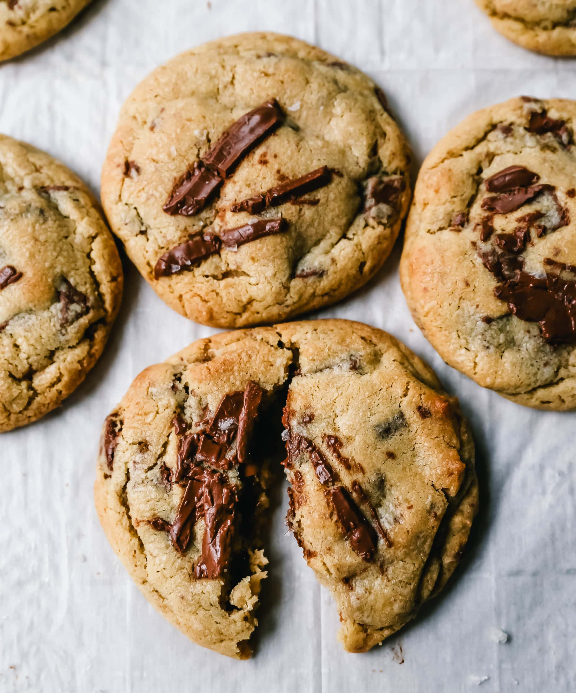

home page
Classic Chocolate Chip Cookies

Description
Soft, chewy chocolate chip cookies with golden-brown edges and gooey
chocolate in every bite. A timeless classic.
Ingredients
- 226 grams unsalted butter, softened
- 150 grams granulated sugar
- 200 grams brown sugar, packed
- 2 large eggs
- 2 teaspoons vanilla extract
- 375 grams all-purpose flour
- 1 teaspoons baking soda
- 1 teaspoons salt
- 350 grams chocolate chips
Steps
-
Preheat the oven: Preheat your oven to 190°C (375°F) and line baking
sheets with parchment paper.
-
Cream the butter and sugars: In a large bowl, beat 226 grams unsalted
butter, softened, 150 grams granulated sugar, and 200 grams brown sugar,
packed together until light and fluffy, about 3 minutes.
-
Add eggs and vanilla: Beat in 2 large eggs one at a time, then mix in 2
teaspoons vanilla extract.
-
Mix in the dry ingredients: In a separate bowl, whisk together 375 grams
all-purpose flour, 1 teaspoons baking soda, and 1 teaspoons salt.
Gradually mix into the wet ingredients until just combined.
-
Fold in chocolate chips: Gently fold in 350 grams chocolate chips.
-
Scoop the dough: Scoop rounded tablespoons of dough onto the baking
sheets, spacing them 5cm apart.
-
Bake the cookies: Bake until the edges are golden but the centers still
look slightly underdone.
-
Cool and serve: Let cookies cool on the baking sheet for 5 minutes
before transferring to a wire rack.
Notes
Chill the dough for 30 minutes before baking for thicker cookies. Slightly
underbaking gives the chewiest texture; they'll firm up as they cool.